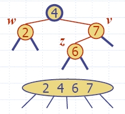

| Algorithm insertItem(k, e) 1.We search for key k to locate the insertion node v 2.We add the new item (k, e) at node v 3. while overflow(v) if isRoot(v) create a new empty root above v v ← split(v) |


 |
|
|  |
|
| Red-black
tree action |
(2,4)
tree action |
result |
| restructuring | change
of 4-node representation |
double
red removed |
| recoloring |
split |
double
red removed or propagated up |
| Red-black
tree action |
(2,4) tree action | result |
| restructuring |
transfer |
double
black removed |
| recoloring |
fusion |
double
black removed or propagated up |
| adjustment |
change
of 3-node representation |
restructuring
or recoloring follows |